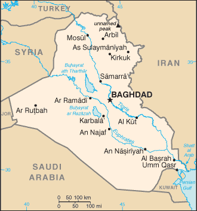
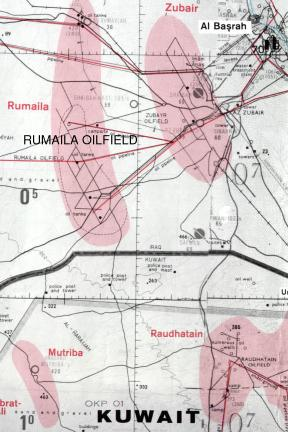

Iraq Sanctions
In 1990 Iraq took over its small southern neighbor Kuwait, whom Iraq claimed was siphoning off Iraqi oil via "diagonal drilling" into Iraq's Rumaila oil field. America, the world's largest oil consumer, has long been interested in the world's largest oil supplies in the Middle East, and so took a particular interest in this development. Although America had supported Iraq up until this point (both politically and militarily), some line was crossed and America decided that Iraq's (not Kuwait's) actions were unacceptable. Perhaps the Kuwait drilling was a planned pretext for this decision, but either way, in response, the U.S. engaged in war and economic sanctions against Iraq, with limited approval of the U.N. (i.e. the rest of the world). The war had its desired effect: the short battle did cause Iraq to withdraw from Kuwait. (Strangely, America did not push on to conquer the country, which appeared easily within its grasp, and which it would do a decade later.)
{kind=link}
Iraq had challenged American dominance in a region of critical importance to the American economy and to its global power relations. Iraq's southerly neighbor, Saudi Arabia, was a close American ally as it held about one-quarter of the proven oil supplies on Earth. Iraq itself was second only to Saudi Arabia and its oil fields were far from fully exploited. These factors, and many others, essentially doomed Iraq to complete submission to U.S. power when it went astray. [need to tie this paragraph to last better.. analyze reason for not conquering in first gulf war.]
The chosen mechanism of its subjugation, in lieu of war, was economic sanctions. Begun before the war, sanctions were kept in place for the better part of the 90s, and in that time brought vastly more calamity to, and power over, the country than did the war itself.
We know what happened thanks to UNICEF, who will for this story play the role of unbiased third party. UNICEF keep tabs on how kids are doing in all the world's countries, and advises on how to help them. In Iraq, for instance, UNICEF reported that from 1979 and earlier to 1989 Iraqis were enjoying a declining infant and child-under-5 mortality rate. Whatever Saddam Hussein was, his government apparently improved the health of Iraqi children. After the war, that trend was reversed.
An article about the sanctions' effects reports: "In 1990, the country was moving quickly into the league of developed nations. Universal health care access, free universal education through university, a well-developed infrastructure and sophisticated public health measures brought a relatively high quality of life to most people. The rate of death for children under five was about 5.6%. With the usual rate of improvement, that under-five mortality rate should have dropped to about 3% by 2002."
UNICEF completed two studies of child health in Iraq during the 90s, one immediately after the war, and one in 1999. What they found was an awful rise in child mortality: if Iraq had continued its trend as of 1990, there would have been approximately 500,000 more children under 5 alive in Iraq in 1999 than were actually found [the original UNICEF link is not available. The report is fully reproduced here]. Even if the trend had flattened, and the war didn't happen and no droughts had occurred, the figure for excess deaths comes to around 450,000 deaths through 2002 (says Columbia University).
Why had all these children (and surely many others who weren't tracked) died? The majority were from diarrhea and acute respiratory infections. Horribly, this epidemic had been predicted, and planned for, by our Department of Defense.
This Defense Intelligence Agency document demonstrates that U.S. war planners decided to target clean water facilities during the war, with the expectation that repair of the water system would be impossible under sanctions, and that the kind of destruction and depravation this entailed would bring Iraq to its knees. In a particularly revealing analysis, the document notes that without clean water, epidemics of "such diseases as Cholera, Hepatitis, and Typhoid" in Iraq would become probable and that we would have to watch out because Iraq would "try convincing the United Nations or individual countries to exempt water treatment supplies from sanctions for humanitarian reasons".
Presiding over this annihilation was George Bush I, and his notable accomplice, then Secretary of Defense Dick Cheney. Later, Bill Clinton and Secretary of State Madeleine Albright toed the line in a remarkable demonstration of bipartisanship.
Albright even gave us a concise summary of the moral calculus involved. When the U.N. (i.e., the rest of the world) was yelling at us to stop the abuse, our media finally came forward with this sheepish yelp during a 60 Minutes interview:
INTERVIEWER (Leslie Stahl): We have heard that a half million children have died (as a result of sanctions against Iraq). I mean, that is more children than died in Hiroshima. And, you know, is the price worth it?
MADELEINE ALBRIGHT: I think this is a very hard choice, but the price, we think the price is worth it.
Presumably she was doing a cost-benefit analysis here, referring to the $8 Trillion worth of oil that lies beneath the sands of Iraq.
In a separate matter, it should now be clear why the U.S. is one of the few countries that will not submit to international war crimes tribunals.